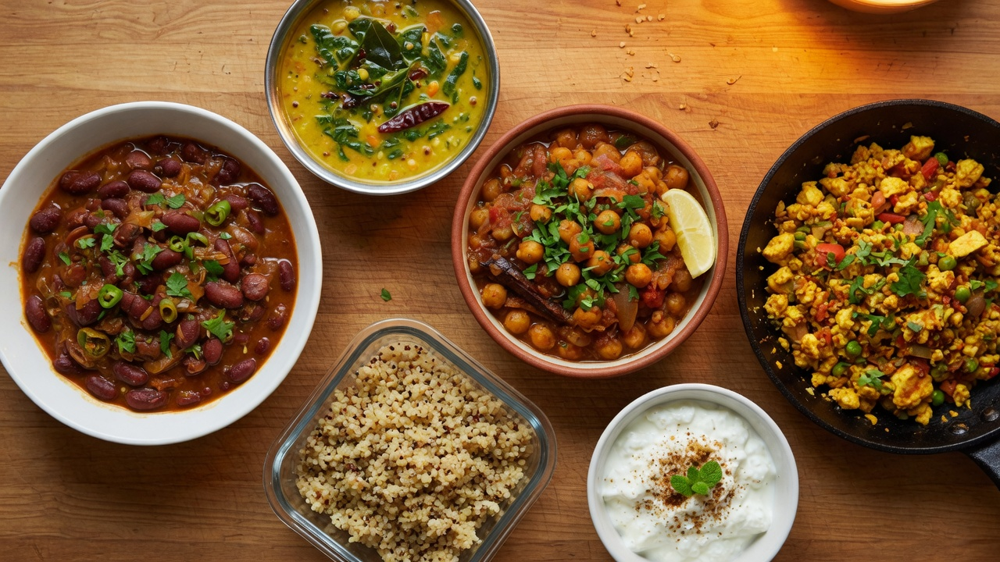
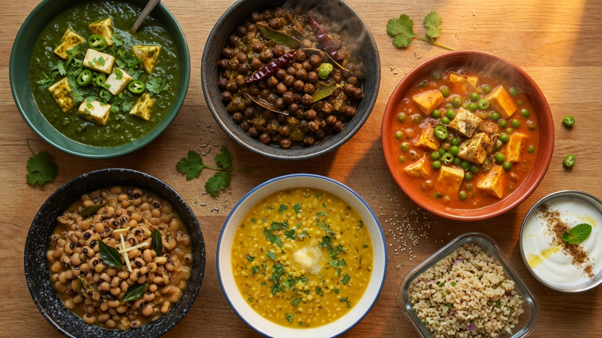
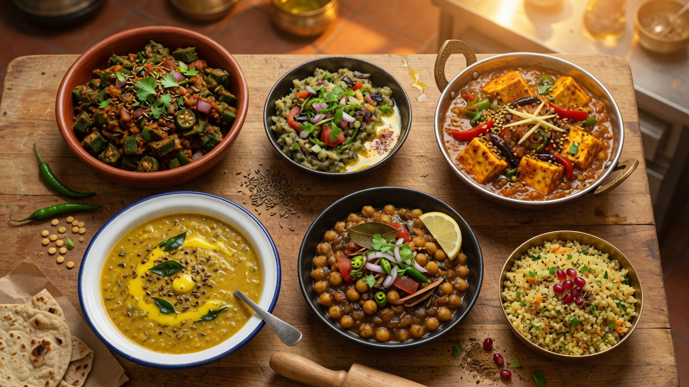
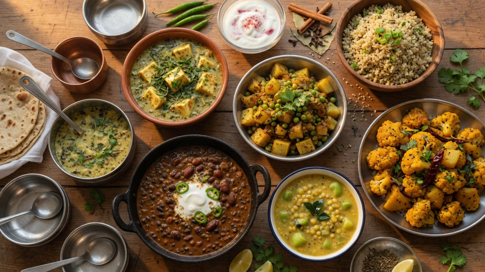
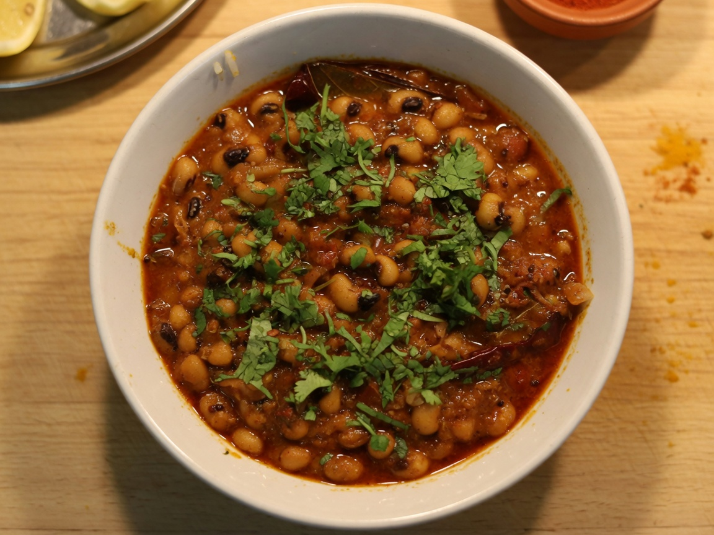
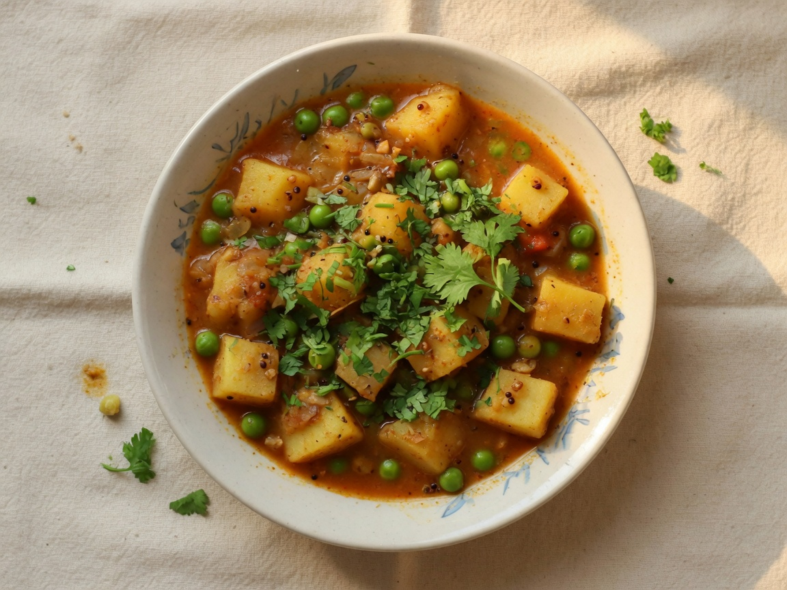
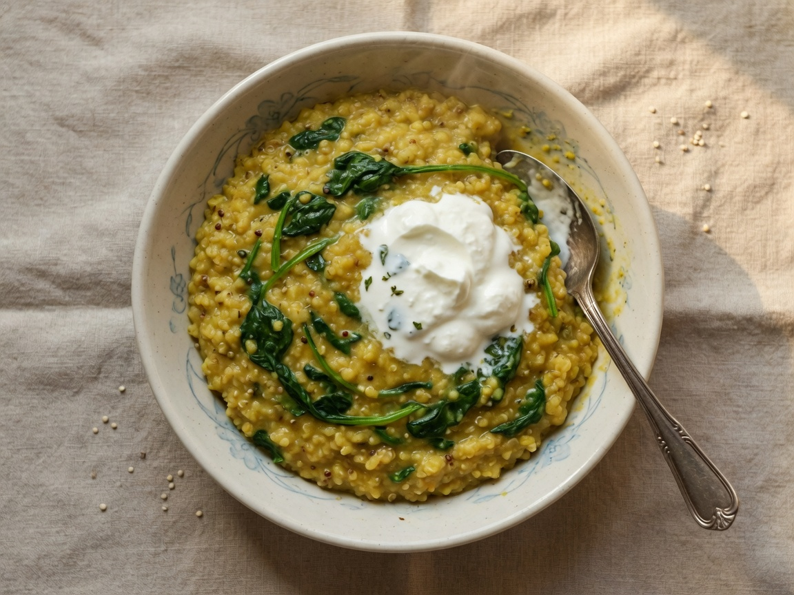

Week 1Classic North
Rajma masala, mixed dal with spinach, and paneer bhurji.
RajmaMixed dal (spinach)Paneer bhurji
Open menu →

Week 2Greens & Paneer
Lauki chana dal, palak paneer, and cumin-tossed jeera aloo.
Lauki chana dalPalak paneerJeera aloo
Open menu →

Week 3Bazaar Veg
Punjabi chole, kadai paneer, and smoky baingan bharta.
CholeKadai paneerBaingan bharta
Open menu →

Week 4Punjabi Comfort
Home-style dal makhani, methi paneer, and dry aloo gobi.
Dal makhaniMethi paneerAloo gobi
Open menu →

Week 5Light & Fresh
Lobia masala, moong dal tadka, and dry bhindi masala.
LobiaMoong tadkaBhindi masala
Open menu →

Week 6Ghar Ka Khana
Kala chana masala, arhar dal tadka, and aloo matar.
Kala chanaArhar dalAloo matar
Open menu →

Week 7One-Pot & Beans
Chana masala, high-protein khichdi, and matar paneer.
Chana masalaKhichdiMatar paneer
Open menu →